Npc Blind Lions
A, Dakris Goldmane
Dono
Magia degli artefatti, ???
Rango
Note
Il successore dell’eroe Ajani Goldmane, fondatore dei Lions pride, anche se ancora di giovane età le responsabilità e le aspettative che gravano su di lui sono molte.
Cercando di evitare la fama che il suo nome gode, e cercando di mostrarsi all’altezza delle aspettative, si è unito ai Blind lions dove ricopre il prestigioso ruolo di “A”.
Grazie agli innumerevoli e potentissimi artefatti che ha ereditato dalla sua famiglia Dakris è un potentissimo combattente, ma l’inesperienza dovuta alla sua giovane età spesso si fa sentire in combattimento, inoltre l’uso intensivo degli artefatti, lo hanno spinto a fare un uso sempre più marginale del suo vero Dono, che resta sconosciuto ai più.
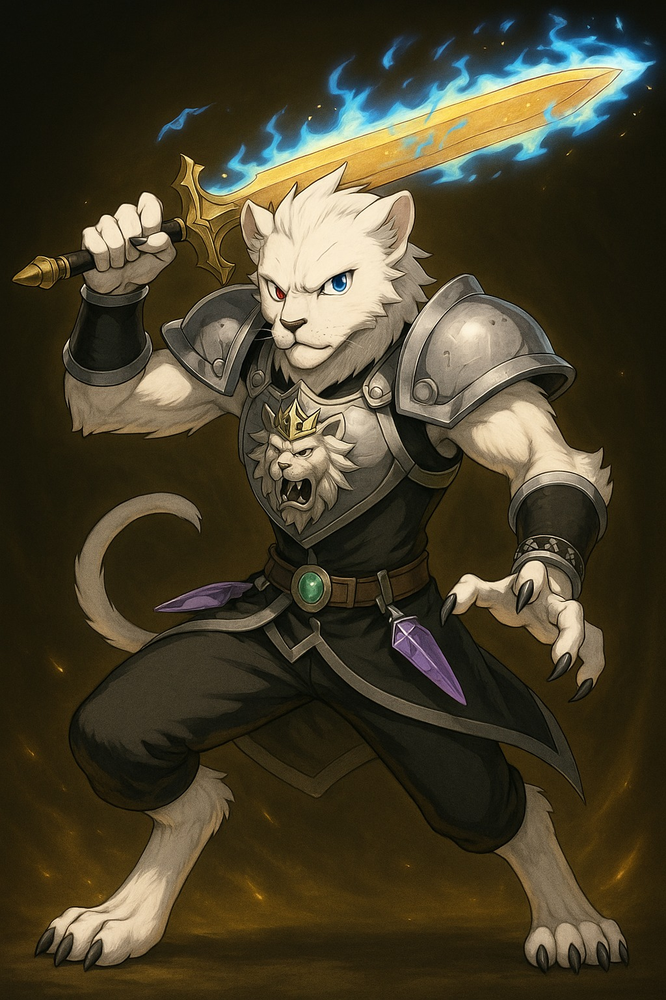
Azathot
Dono
Magia del cosmo
Rango
B
Note
Sfuggito agli esperimenti di Drey, Azathot si trovò in un mondo completamente sconosciuto per lui, privo di memoria non sapeva cosa fare, quando venne accolto da K.
A causa della magia demoniaca che scorre nel suo corpo, le sue magie sono spesso instabili e pericolose, per questo, finchè non imparerà a controllarla, K gli affianca un mago dei Blind lions per assicurarsi che la situazione non degeneri.
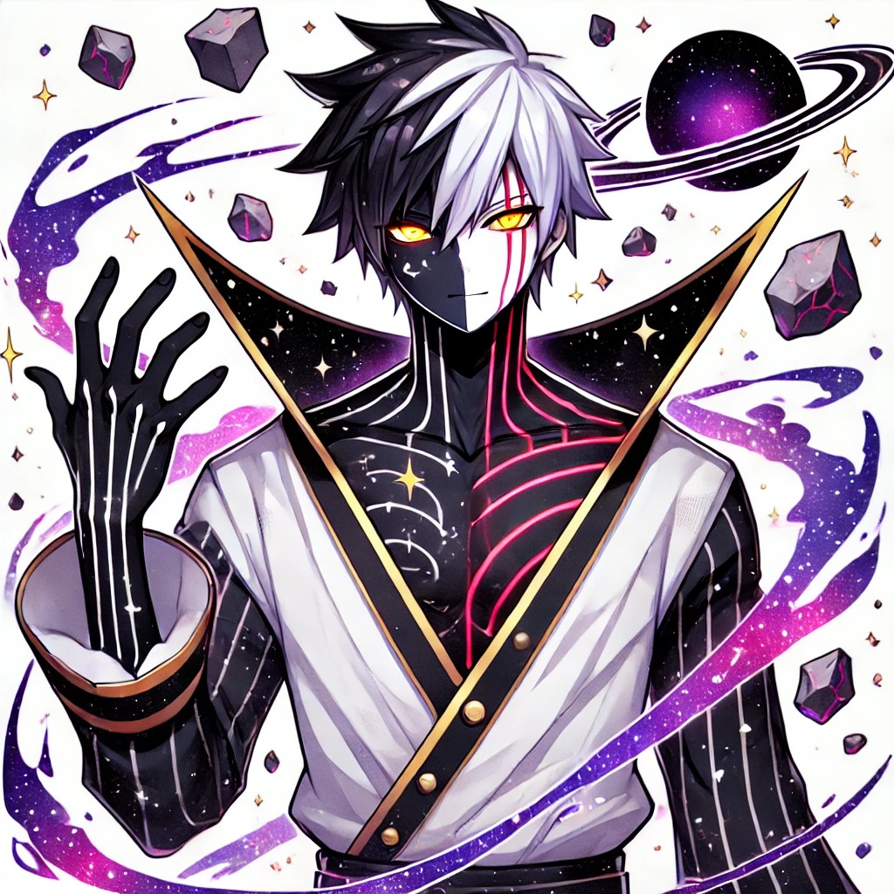
B, Rider Chuas
Dono
Magia dei dolci, Magia delle emozioni
Rango
S
Note
B appartiene alla razza dei Piagati, quando la sua gente venne maledetta era uno dei più giovani e da allora non crebbe più, per questo la sua statura è rimasta gracile e minuta, per questa ragione si è specializzato nel combattimento rapido e furtivo.
Nei secoli da Piagato, nonostante il dolore della sua condizione, non ha mai smesso di aiutare gli altri, in particolare i deboli e gli innocenti.
Ammirato dalla sua forte morale, K gli propose di unirsi ai Blind lions.
Grazie alle formidabili capacità di J, questi è riuscito ad arginare in parte la maledizione che affligge B, arrestando il dolore e la decomposizione, ciò gli ha permesso pian piano di recuperare il carattere allegro che B aveva un tempo.
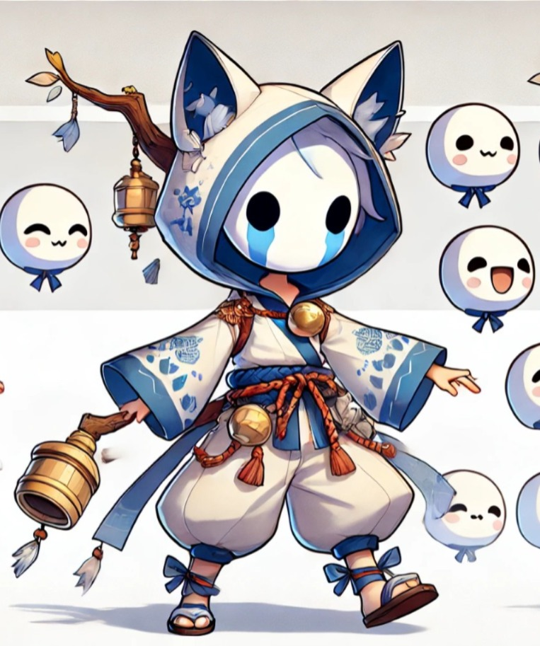
C, il Collettivo
Dono
Non classificabile
Rango
S
Note
C priva di divenire quel che è ora, un tempo era un semplice topo di campagna, venne preso come cavia per gli esperimenti di un mago, i quali studi vertevano sulla manipolazione dell’anima, di preciso voleva vedere se suddividendo un’anima in diverse parti, fosse possibile dar vita a più individui.
L’esperimento causò la morte del mago e la distruzione dell’intero laboratorio, ma C non morì quel giorno, o meglio, morì il vecchio C ma quel che rimase furono i frammenti della sua anima che dispersi nell’area andarono a cercare un corpo a cui tornare, trovando le migliaia di altre cavie.
Così nacque il Collettivo, una moltitudine di Topi unite da una mente collettiva, ciascuna con il proprio dono.
Scoperti gli eventi di quel giorno, J rimase affascinato da un simile risultato e con l’intento di raccogliere maggiori informazioni su C lo invitò ad unirsi nei Blind lions.
Con il passare del tempo però C iniziò ad affezionarsi alla causa, stringendo un forte legame con la gilda.
Presi singolarmente le parti di C non sono molto forti, ma insieme sono una forza inarrestabile.
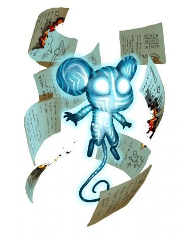
Chroma
Dono
Magia del controllo
Rango
Famiglio
Note
Il fidato compagno di Godfrey, anch’esso creato da J, il quale gli ha dato quella forma sotto richiesta di Godfrey.
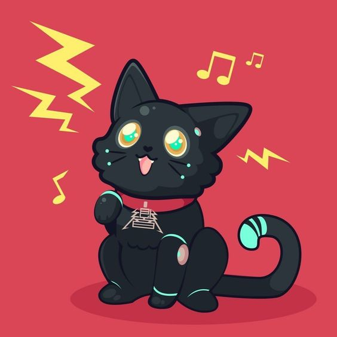
E, il mercante girovago
Dono
Magia degli spiriti celesti, Magia dell’oro, Magia del Riequip
Rango
non classificato
Note
E rientra perfettamente nella definizione di “eccentrico”, nessuno sa quale fosse il suo nome o la sua storia passata, è anche difficile definirne la razza, pei il costume con cui va sempre in giro.
E è un personaggio sempre sopra le righe, carismatico ed amichevole, ma è difficile capire cosa gli passa per la testa, ha un vero e proprio amore per gli affari e gli oggetti magici, tanto da collezionarne a centinaia nel suo zaino, in particolare ha una vera ossessione per le chiavi degli spiriti, con i quali ha decine di contratti stilati.
Per via del suo amore verso gli affari, K lo ha messo a gestire le finanze dei Blind lions, da allora, il gruppo non ha più avuto problemi di soldi.
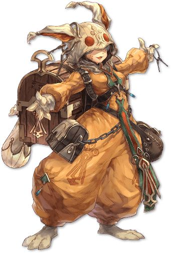
F, Finrall
Dono
Magia dei sogni/incubi, Memory make
Rango
S
Note
Finrall un tempo era uno dei Therian a difesa del Pilastro del cielo, quando cadde però si trovava al Pilastro della natura e non potè far nulla per aiutare la sua gente.
Senza più una casa, divorato dai sensi di colpa per non essere stato presente nel momento del bisogno, lasciò il Pilastro della natura, divorato dall’odio cominciò a cambiare, iniziò a dare la caccia ai demoni ed i loro seguaci che erano all’interno del muro.
Sempre più lontano dalla natura Therian e più simile a quella demoniaca iniziò a perdere se stesso, finchè non incontrò Tulki, un Therian che come lui aveva perso la sua casa e la sua gente, ma non si era lasciato vincere, ricostruendone una nuova nei Lions pride.
Seppur non abbandonando la sua vendetta, si unì ai Lions pride e poi ai Blind lions, trovando così una nuova casa e pian piano tornando ad essere quello di un tempo.
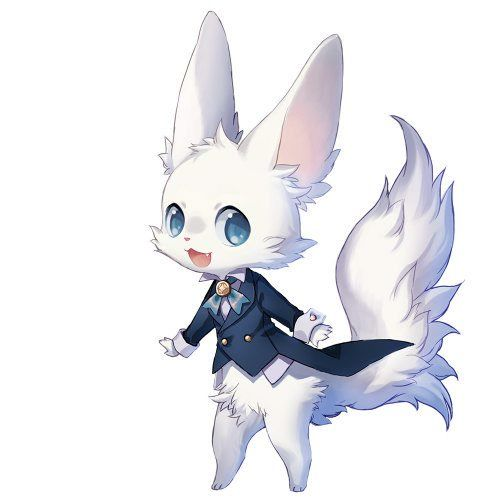
G, Juliette Duskwood
Dono
Magia degli spiriti, Magia del fuoco
Rango
Note
Una donna rinacque ad Innstrad come spettro tormentato, come molti altri anche lei era priva di un’identità, alimentata solo dall’odio verso i viventi.
Vagando senza meta, tormentata fra le foreste oscure foreste, trovò una donna ferita mortalmente in attesa della sua fine, invece di attaccarla decise di possederne il corpo.
Quando lo fece, le loro anime si fusero in una e nacque una nuova entità, due coscienze fuse in una, così nacque Juliette.
Juliette conosceva il tormento degli spiriti così decise quale sarebbe stato il suo scopo, aiutare le anime tormentate a trovare la pace.
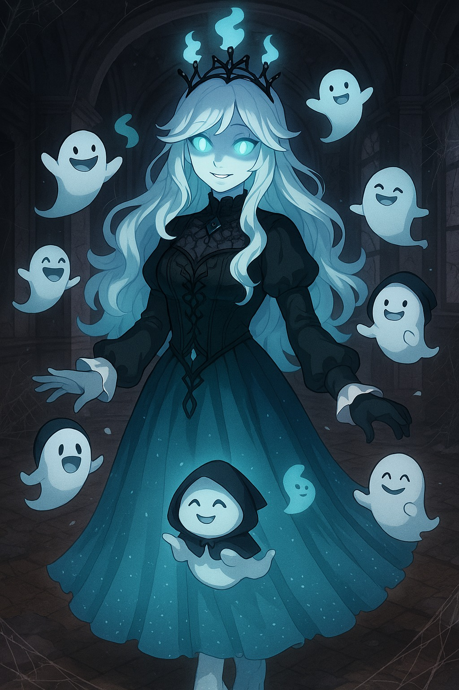
Godfrey
Dono
Magia della strategia
Rango
B
Note
L’ultima creazione di J, un Golem dotato di anima, in grado di pensare e forse anche provare emozioni, con un inspiegabile amore per i gatti.
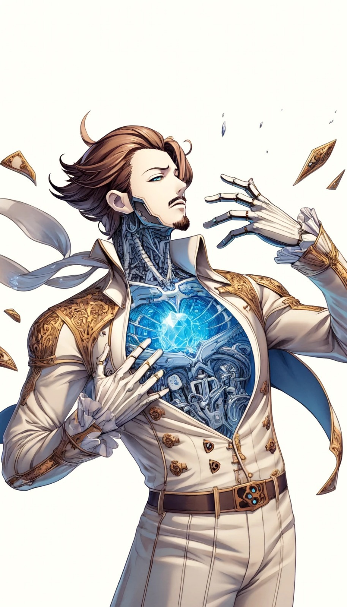
J, Albert Reames
Dono
Magia della Scienza, Magia dei Golem
Rango
Non classificato
Note
Questo eccentrico personaggio, non si considera un mago, poiché non si è mai “arruolato” in nessuna gilda, di fatti secondo i registri del Consiglio della magia è considerato un Civile.
Fin da molto giovane mostrò una spiccata intelligenza ed una capacità creativa molto al di sopra della norma, in breve tempo divenne una figura di riferimento in ambito accademico, i suoi studi sulla creazione di golem senzienti erano avanti anni, rispetto ai suoi colleghi, ciò ovviamente attirò su di se attenzioni non sempre desiderate.
Benchè Albert gradisse i fondi che giungevano a finanziare i suoi studi, tutta quella fama lo infastidiva, richieste, domande, invidie, erano tutte distrazioni al suo lavoro.
Un giorno venne rapito da un gruppo di mercenari, desiderosi di sfruttare il suo lavoro per i loro fini personali, a salvarlo fu proprio K, il quale gli fece una proposta, tornare alla sua vecchia vita, o unirsi ai Blind lions, avrebbe potuto lavorare in nome del bene in tutta segretezza e senza più nessuno a disturbarlo.
Albert non ci pensò due volte ad accettare, finsero la sua morte e nacque J, il braccio destro di K.
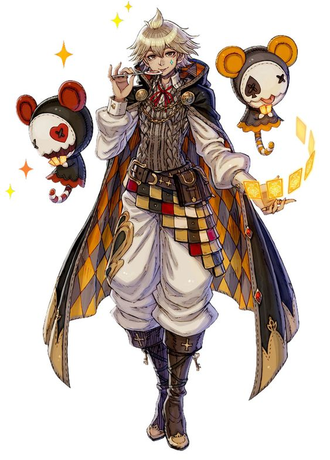
K, Arthur Firemane
Dono
Magia delle fate, Magia della strategia
Rango
Eroe
Note
Il Misterioso leader dei Blind lions

???
Dono
Magia dea morte, Magia dea carta
Rango
B
Note
Ci dovrebbe essere una ettera mancante, però non si sa a chi appartiene. Dovrebbe essere de' afabeto, ma quae non viene in mente.

M, Thalion Downsinger
Dono
Magia del sole, Magia della voce
Rango
Note
Come molti altri Elfi del sole, M viene da una famiglia di ferventi adoratori di Helyos, eppure lui non si è mai sentito particolarmente legato alla religione, preferendo seguire quel che il suo cuore reputasse giusto, piuttosto che ascoltare ciecamente i dettami di qualcun altro.
Ciò portò ad un inevitabile rottura con la sua famiglia ed alla sua gente, che lo spinse a dover fuggire per sopravvivere.
Solo e senza più nessuno al mondo iniziò a viaggiare come bardo itinerante, ascoltando le persone, vivendo fra la gente che il suo Dio disprezzava ed imparando che la luce ed il bene può essere trovato anche negli angoli più oscuri, mentre il male ed il buio risplendono li dove la luce è più intensa.
Quando venne arruolato da K trovò finalmente il suo posto nel mondo, con i Blind lions avrebbe portato la luce dalle ombre ed avrebbe ridato la voce a coloro che non l’avevano più.
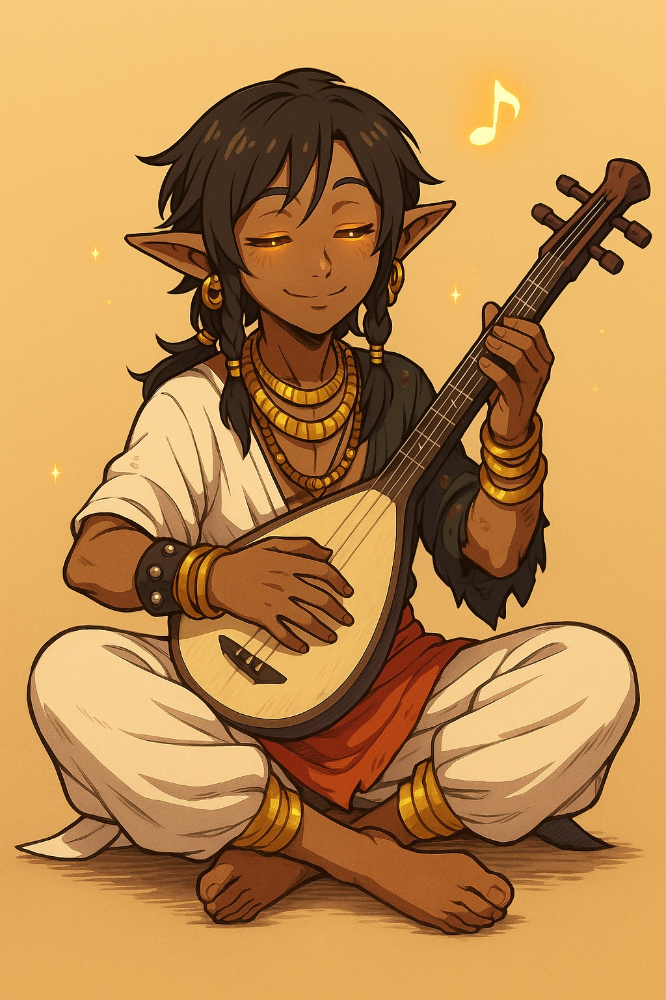
N
Dono
Magia della morte
Rango
A
Note
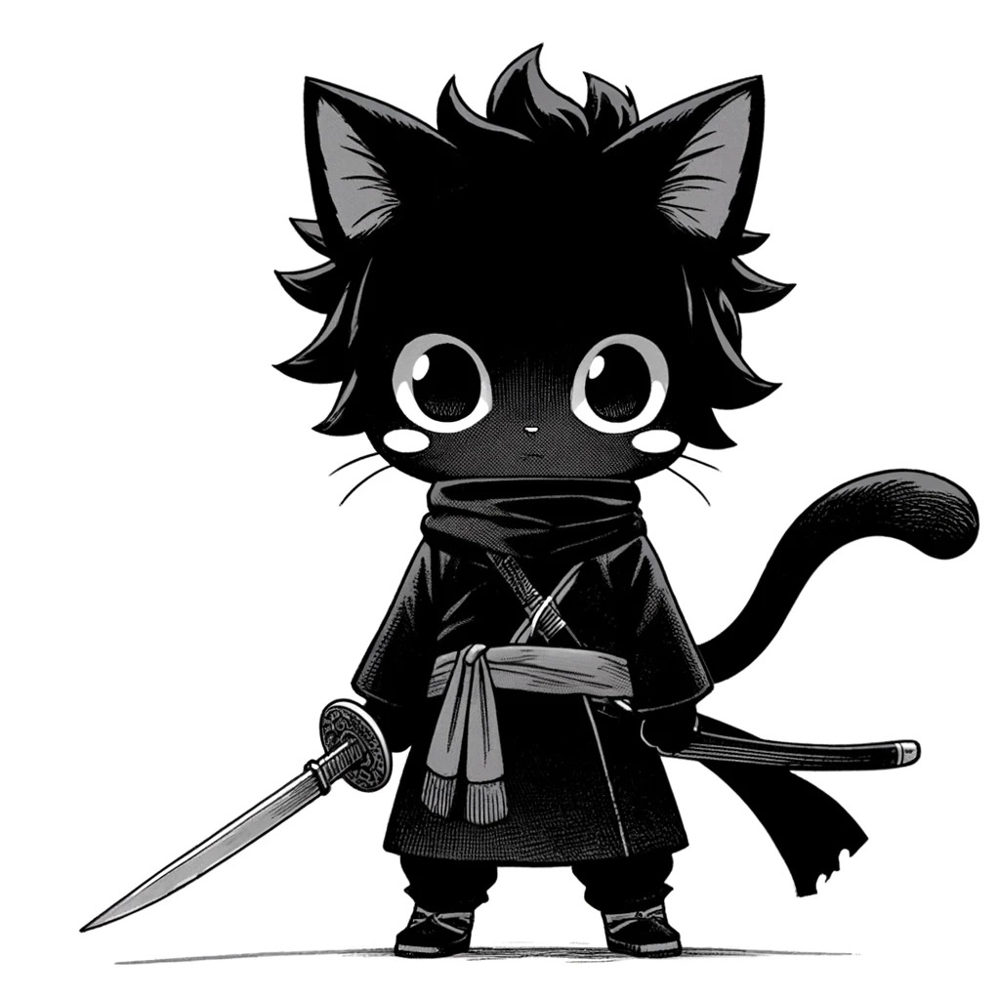
O, Henrika Nagemy
Dono
Magia alchemica, Magia dello spazio
Rango
Eroe
Note
Henrika apparteneva alla vecchia generazione dei Lions pride, al tempo era una testa calda, pronta a mettersi sempre nei guai e gettarsi nella mischia, ma con l’avanzare del tempo, gli acciacchi iniziarono a farsi sentire e si mise da parte, per lasciare spazio alle nuove generazioni.
Eppure con il tempo aveva capito che il mondo era pieno di persone cattive e che non sempre si poteva agire alla luce del sole, c’era bisogno che qualcuno si sporcasse le mani così che i giovani non dovessero farlo.
Così, assieme a K finse la sua morte e fondarono i Blind lions.
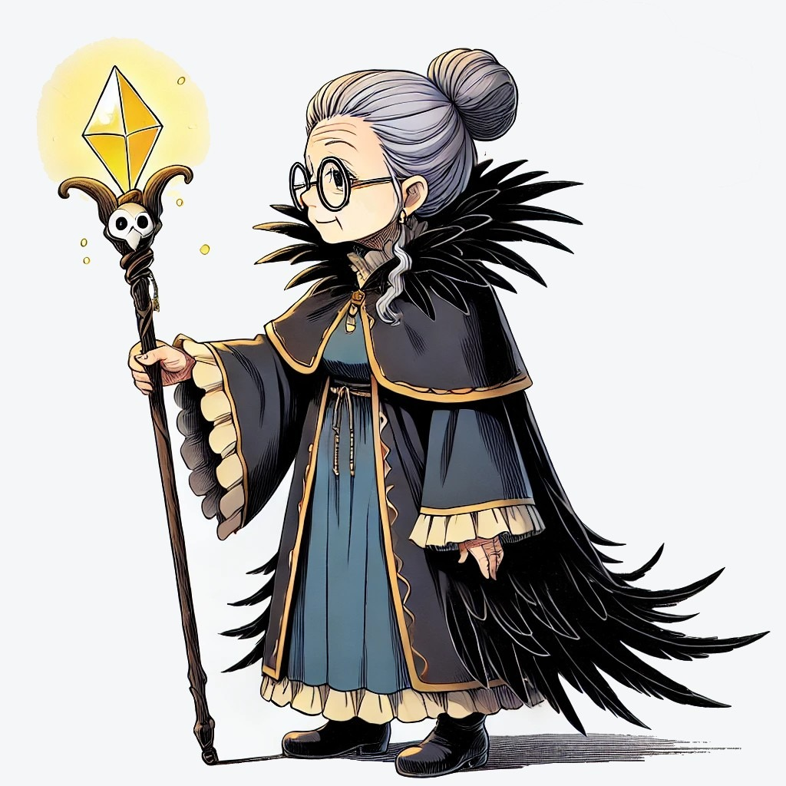
Q, Lucky
Dono
Partial Beast, Magia dei Portali, Magia Conoscenza
Rango
Note
Un’umana sulla 40ina, profondamente legata a suo fratello gemello Red con il quale condivide la posizione di “Q” nei Blind Lions.
Benchè ne sia ampiamente capace, Lucky non è particolarmente incline allo scontro, prediligendo risolvere i conflitti con il dialogo.
Originaria delle regioni ad Est del continente, la passione di Lucky è sempre stata verso la ricerca e l’esplorazione, benchè spesso il suo ruolo nei Blind lions la porti lontana da questi obbiettivi, cerca sempre di ritagliarsi dello spazio fra i suoi doveri per una ricerca o per l’esplorazione di un dungeon.
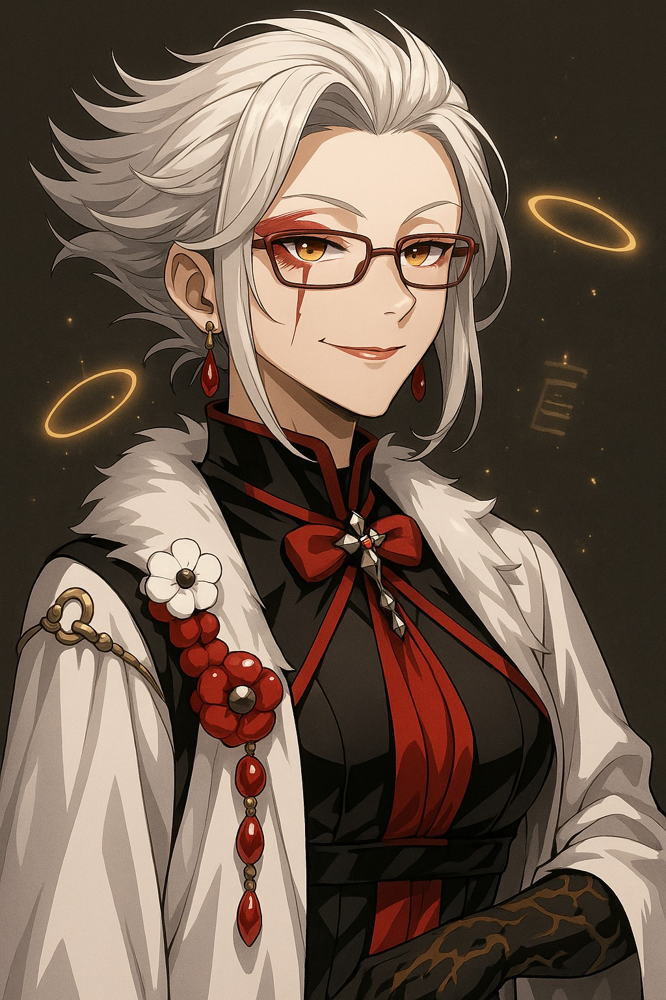
Q, Red
Dono
Take over Undead, Magia delle piante
Rango
Note
Un umano sulla 40ina, il fratello gemello di Lucky con la quale condivide la posizione di “Q” nei Blind Lions.
Benchè non sia abile quanto sua sorella nella magia, Red colma facilmente il divario con le sue formidabili abilità nella spada, non condividendo lo smodato interesse di Lucky nella esplorazione o nella ricerca, si trova spesso a farle da semplice guardia del corpo, specialmente vista la tendenza di Lucky nel dimenticare ogni pericolo quando vede qualcosa che le interessa.
Anche se dal carattere poco socievole, Red ha una spiccata morale, che lo ha spinto ad unirsi nei Blind lions, per aiutare i più deboli e soprattutto punire coloro che se lo meritano.

R, Thark Clawhollow
Dono
Magia del sangue
Rango
Note
R è uno Gnoll dall’aspetto inquietante, coperto di borchie e spuntoni va in giro dandosi un’aria da duro. Quando K ha bisogno di svolgere un lavoro dove bisogna sporcarsi particolarmente le mani, R è sempre il primo a proporsi.
Nonostante le arie da duro, tiene molto ai suoi compagni e farebbe di tutto per proteggerli, anche se cerca di non darlo a vedere, ama quando gli fanno i complimenti per il suo aspetto e le sue abilità.
Forse per l’incompatibilità fra le due razze o forse per via della loro nature, fra R e W non corre buon sangue, vi è un’aperta competizione su chi sia il migliore fra i due, ma visto che questa competizione non fa altro che spronare entrambi a dare il loro meglio, K chiude un occhio, benchè la consideri puerile.
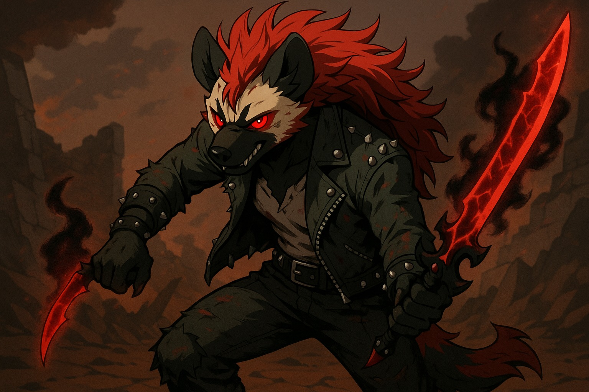
S, Balthazar
Dono
Magia dei golem
Rango
Note
Dopo la dipartita di S, vista le continue minacce che i Blind lions continuavano a fronteggiare, K aveva bisogno di una nuova lettera con un ampio potere offensivo, così fu subito lampante la scelta di Balthazar, il quale già membro da tempo dei Blind lions, attendeva con ansia la promozione a lettera.
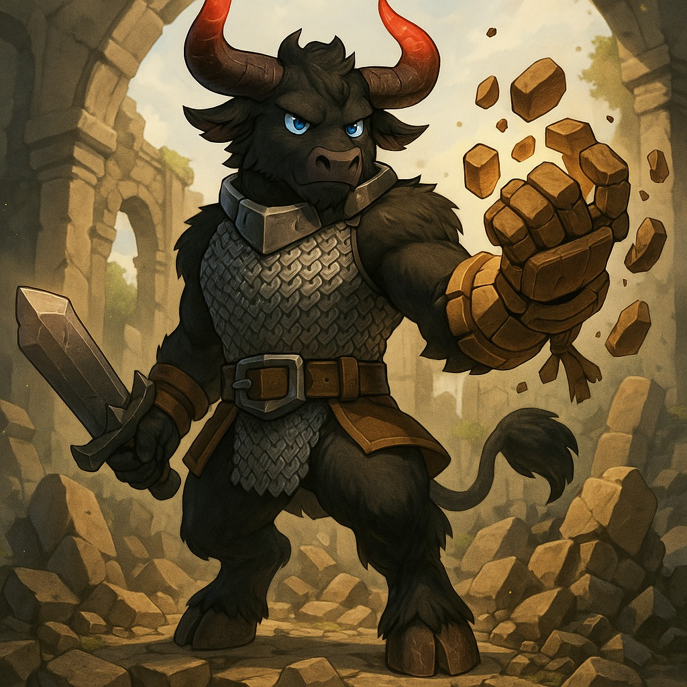
S, come il sale
Dono
Magia del legno
Rango
B
Note
Unitasi da poco ai Blind lions puntava, puntava a guadagnare rapidamente una posizione di prestigio all’interno del gruppo, sfruttando le sue grandi capacità.
Per questo quando le venne assegnata come missione di fare da balia al cucciolo di K, un certo Azathot era particolarmente infastidita, ma non durò molto il suo fastidio quando venne trasformata in sale e disintegrata da una meteora.
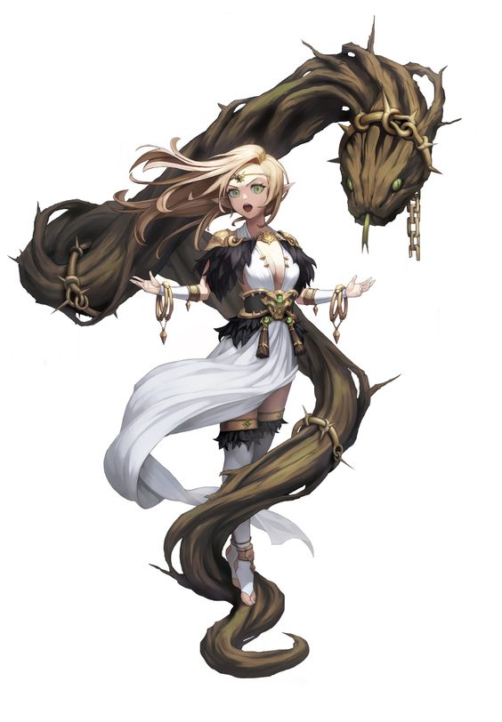
T, “Ogni altro nome è solo una maschera”
Dono
Magia dei Parassiti, Magia delle maschere, Magia delle emozioni
Rango
S
Note
Nessuno sa eccetto K chi fosse T prima di unirsi ai Blind lions, quando gli viene chiesto evade la domanda o non risponde, quel che è certo è che pochi maghi sono abili quanto lui ad infiltrarsi all’interno di gruppi o fazioni nemiche.
I suoi doni gli permettono di spacciarsi per chiunque e non si fa alcune remore a tradire qualcuno, anche se fino a pochi minuti prima sarebbe sembrato il suo migliore amico.
Nonostante la sua abilità nell’ingannare, la fedeltà verso K ed i Blind lions è assoluta, come ama spesso dire, i suoi talenti sono una minaccia solo per chi se lo merita.
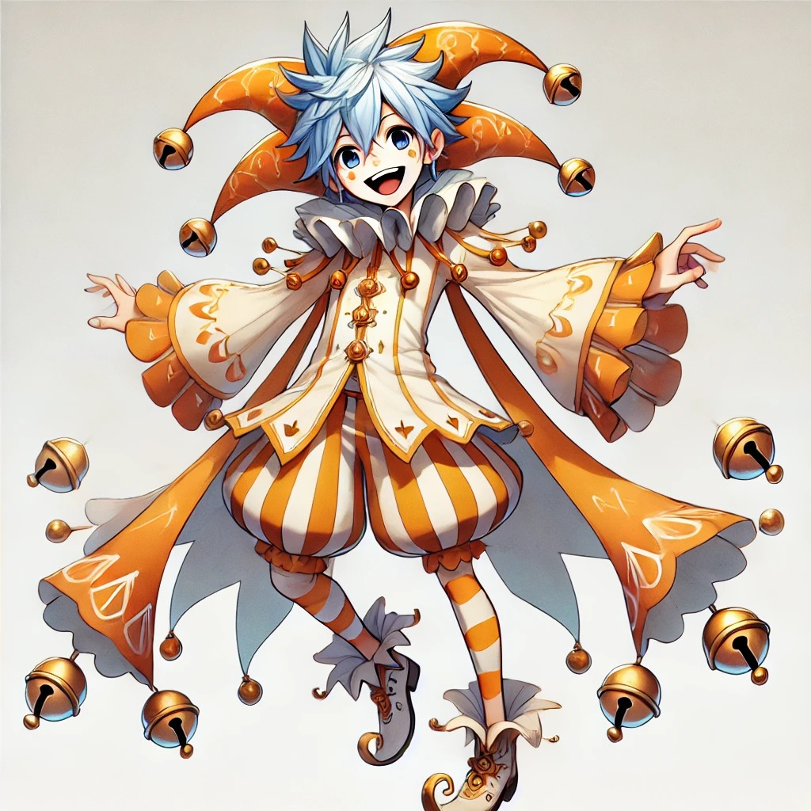
W
Dono
Magia dell’Anti magia
Rango
A
Note
Una volta perduta la sua famiglia nell’estremo nord, ne trovò una nuova fra i Blind lions, ora protegge i cuccioli dei Lions pride, uccidendo la spazzatura che loro non possono.
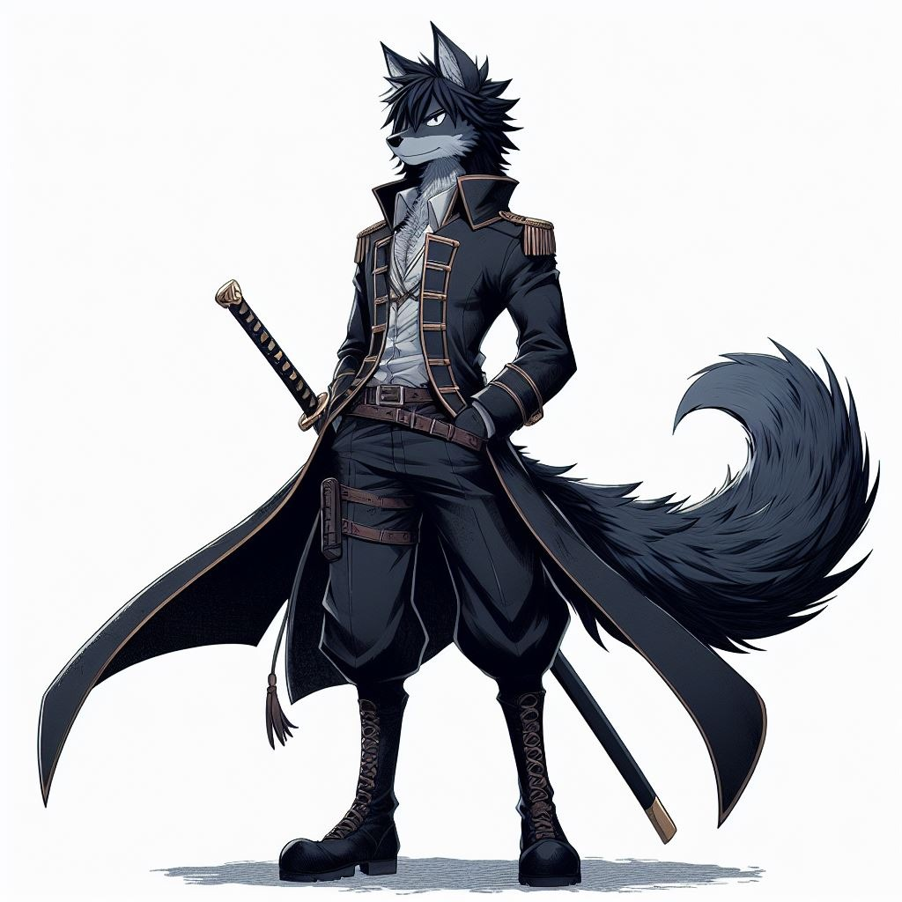
Wetil Lynxus
Dono
Magia Solid script
Rango
C
Note
Un giovane felinide unitosi ai Blind lions da poco, anche se a dirla tutta è ancora lontano dal potersi definire effettivamente un membro della gilda, dato che si trova ancora in apprendistato, sotto da guida di T.
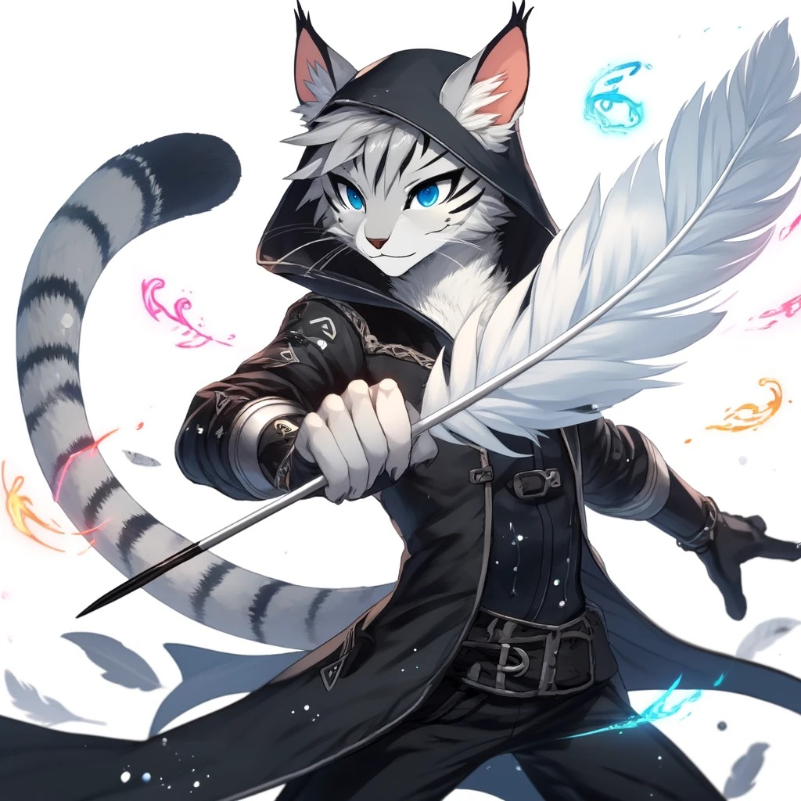
X, Mydas
Dono
Godslayer dell’oro
Rango
Note
Risalente alla guerra della seconda piaga, questo enigmatico godslayer si è unito ai Lions pride poco dopo la sua fondazione.
Quando vennero fondati i Blind lions fu lieto di unirvisi non essendo mai un amante della fama e della politica attorno alle gilde ed i maghi.
Ora dalle ombre svolge il ruolo di arma segreta per K, impiegato nelle missioni più complicate e pericolose.
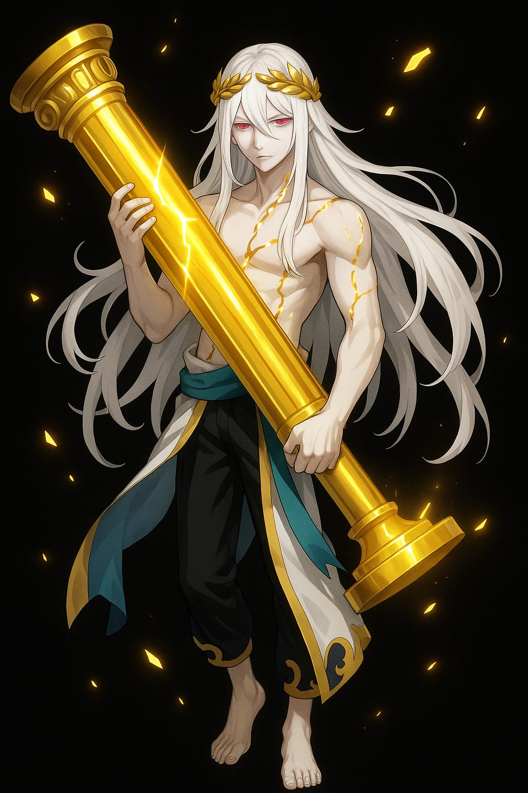
Z, L’Oni maledetto
Dono
Magia degli Oni, Magia dell’Oro
Rango
Note
Poche cose al mondo sono crudeli e spietate come un Oni, sadici manipolatori che godono nel vedere la sofferenza altrui, un tempo Z quando aveva un altro nome era proprio come loro, un Oni che ha commesso innumerevoli atrocità alla ricerca di potere e semplice divertimento.
Finchè, non cadde vittima di una terribile maledizione antica che alterò la sua mente, invertendo il suo allineamento.
Da quel momento Z traumatizzato dagli orrori che aveva commesso decise di fare ammenda ed aiutare il prossimo.
Ma ciò non era un’impresa facile, benchè del suo vecchio se rimaneva solo l’aspetto terrificante, quello bastava a far fuggire chiunque, rendendogli impossibile aiutare il prossimo.
Così incontrò K, che lo prese con sé nei Blind lions, così che potesse aiutare il prossimo da dietro le quinte.
Benchè anche fra i membri dei Blind lions non tutti si fidino ancora pienamente di lui, poche persone incontrate sono gentili e premurose quanto lui.
Per questo alcuni lo chiamano l'Oni-chan maledetto.
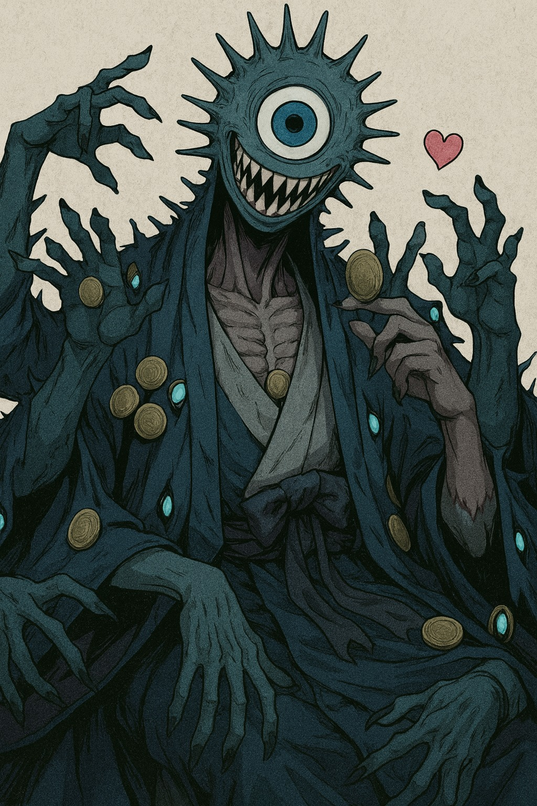